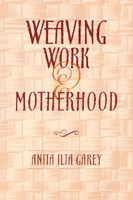

A new understanding of working mothers
A new understanding of working mothers


 A new understanding of working mothers
A new understanding of working mothers

|  |
Weaving Work and MotherhoodAnita Ilta Gareypaper EAN: 978-1-56639-700-1 (ISBN: 1-56639-700-6) |
William J. Goode Book Award, American Sociological Association Family Section, 2000
"Path-breaking, brilliant, and a pleasure to read. The idea that women will be either career or home oriented is one that is long overdue for re-examination."
—Arlene Kaplan Daniels, Professor Emerita, Department of Sociology, Northwestern University
In American culture, the image of balancing work and family life is most often represented in the glossy shot of the executive-track woman balancing cell-phone, laptop, and baby. In Weaving Work and Motherhood, Anita Ilta Garey focuses not on the corporate executives so frequently represented in American ads and magazines but, rather, on the women in jobs that typify the vast majority of women's employment in the United States.
A sociologist, work, and family expert, Garey situates her research in the health service industry. Interviewing a racially and ethnically diverse group of women hospital workers—clerical workers, janitorial workers, nurses, and nurse's aids—Garey analyzes what it means to be at once a mother who is employed and a worker with children. Within the limits of the resources available to them, women integrate their identities as workers and their identities as mothers by valuing their relation to work while simultaneously preserving cultural norms about what it means to be a good mother. Some of these women work non-day shifts in order to have the right blocks of time at home, including, for example, a registered nurse who explains how working the night shift enables her to see her children off to school, greet them when they return, and attend school events in the way she feels "good mothers" should - even if she finds little time for sleep.
Moving beyond studies of women, work, and family in terms of structural incompatibilities, Garey challenges images of the exclusively "work-oriented" or exclusively "family-oriented" mother. As women talk about their lives, Garey focuses on the meanings of motherhood and of work that underlie their strategies for integrating employment and motherhood. She replaces notions of how women "balance" work and family with a better understanding of how women integrate, negotiate, and weave together their identities as both workers and mothers.
Breaking new ground in the study of work and family, Weaving Work and Motherhood offers new insights for those interested in sociology, gender and women's studies, social policy, child care, social welfare, and health care.
Excerpt available at www.temple.edu/tempress
"Anita Ilta Garey carves out new terrain by unifying the study of work and family in women's lives. Rich in detail about working mothers' experiences, this book inaugurates a powerful framework for future research in family studies."
—Maxine Baca Zinn, co-editor of Women of Color in U.S. Society (Temple)
"A perceptive account, especially good at making visible the work activities and commitments of women in female-dominated and part-time positions."
—Marjorie DeVault, author of Feeding the Family: The Social Organization of Caring as Gendered Work
"This gem of a study points out the kinds of social solutions that are needed to address how to integrate daily family life with labor force participation. Using a hospital to find respondents who are employed in typically female-dominated occupations, Garey conducted in-depth interviews with women that have children about their individual work and family strategies. She dispels the myth that women choose between employment and family."
—Rosanna Hertz, author of More Equal Than Others: Women and Men in Dual-Career Marriages
"Garey's book helps clarify the dilemmas of the working mother and outlines possible reforms."
—Journal of the Association for Research on Mothering
Acknowledgments
1. "Working Mothers"
2. Strategies of Being
3. "Calling the Shots": Voluntary Part-Time Workers
4. "Putting Your Feet in the Door": Involuntary Part-Time Workers
5. Motherhood on the Nightshift
6. Nine to Five: A Collection of Days
7. Sequencing: Patterns over the Life Course
8. Conclusion
Notes
References
Index
 | Anita Ilta Garey is Associate Professor of Human Development & Family Studies and Sociology at the University of Connecticut. She is co-editor of Families in the U.S.: Kinship and Domestic Politics (Temple) and Who’s Watching: Daily Practices of Surveillance among Contemporary Families. |
Women in the Political Economy, edited by Ronnie J. Steinberg.
No longer active.
Women in the Political Economy, edited by Ronnie J. Steinberg, includes books on women and issues of work, family, social movements, politics, feminism, and empowerment. It emphasizes women's roles in society and the social construction of gender and also explores current policy issues like comparable worth, international development, job training, and parental leave.
© 2015 Temple University. All Rights Reserved. This page: http://www.temple.edu/tempress/titles/1360_reg.html.